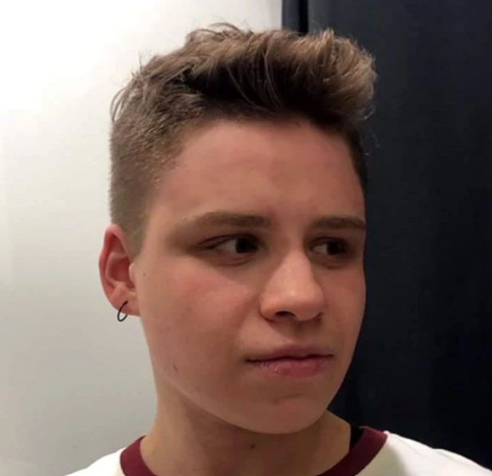

Nojus Ubys

Summary
I am a passionate and persistent learner and worker.
I am no stranger to hard work and pursuing my personal
or collaborative goals. I am dedicated to what I do and
I always strive to be the best version of myself.
Education
- Bachelor’s study programme in Financial and Actuarial Mathematics, Vilnius University
Work Experience
Underwriter, ADB Compensa Vienna Insurance Group
May 2023 - November 2023
- Answering queries in timely manner.
- Collecting data from multiple different sources.
- Assessing risks in risks in vehicle, personal and travel insurances.
- Making desicions based on collected information and historical statistics.
Security and Trust content moderator, Teleperformance Portugal
November 2023 - ...
Contact me